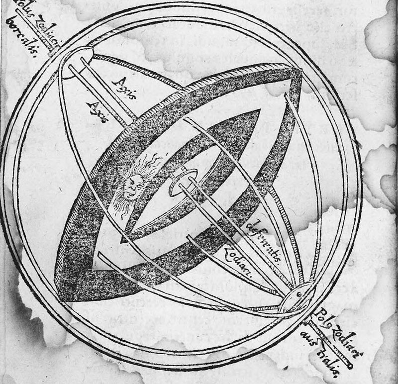

Nella pagina 1.3 abbiamo fatto muovere il Sole lungo l’eclittica a velocità costante. Quel Sole segna bene il tempo in media, ma il suo mezzogiorno risultava sbagliato fino a un quarto d’ora, e la durata del suo giorno di vari minuti, perché il Sole reale gli corre avanti fino a 2° in primavera e resta indietro altrettanto in autunno.
Ipparco misurò questa disuniformità e la spiegò con un solo cerchio il cui centro non è la Terra. Con il suo cerchio possiamo prevedere la longitudine eclittica del Sole entro due primi d’arco, e da qui in poi giudichiamo ogni modello con la sua curva dell’errore, la differenza fra il modello e il cielo reale, tracciata in funzione del tempo.
1 · OsservazioneQuattro stagioni disuguali
Gli equinozi e i solstizi dividono l’anno negli istanti in cui la longitudine eclittica del Sole raggiunge 0°, 90°, 180° e 270°. Un Sole in moto uniforme impiegherebbe un quarto d’anno, 91,31 giorni, per ciascuno di questi quarti. Il Sole reale impiega fra 89 e quasi 94 giorni. La tabella dà le sue stagioni dall’equinozio di settembre del 2025 a quello del 2026, l’ultimo anno intero prima di oggi, dal cielo di riferimento, con gli orari in UT e i nomi dell’emisfero nord, che usano le fonti. Il Sole di riferimento è entro 0,7′ da quello reale, un quarto d’ora del suo moto, quindi gli istanti sono entro 15 minuti da quelli pubblicati (lo US Naval Observatory dà le 14:46 per l’equinozio di primavera), e l’adattamento della sezione 3 sulle stagioni pubblicate dà lo stesso apogeo entro 0,02°.
| Stagione | Inizio | Longitudine eclittica $\lambda$ | Durata |
|---|---|---|---|
| autunno | 22 settembre 2025, 18:25 | da $180^\circ$ a $270^\circ$ | 89,86 giorni |
| inverno | 21 dicembre 2025, 15:00 | da $270^\circ$ a $360^\circ$ | 88,98 giorni |
| primavera | 20 marzo 2026, 14:31 | da $0^\circ$ a $90^\circ$ | 92,74 giorni |
| estate | 21 giugno 2026, 08:15 | da $90^\circ$ a $180^\circ$ | 93,66 giorni |
La metà dell’anno dall’equinozio di marzo all’equinozio di settembre è più lunga di 7,6 giorni dei sei mesi precedenti. Poiché il Sole percorre 180° di longitudine eclittica in ciascuna metà, deve muoversi più lentamente nell’estate boreale che in inverno, e la Figura 1 mostra che lo fa.
Il moto giornaliero oscilla di circa il 3,4% da una parte e dall’altra della media. In un quarto d’anno queste piccole differenze si sommano fino ai due o più giorni di cui la stagione più lunga e la più corta differiscono da un quarto d’anno.
Ipparco misurò la stessa disuguaglianza nel II secolo a.C. Tolomeo riferisce che egli prese 94½ giorni dall’equinozio di primavera al solstizio d’estate e 92½ giorni da lì all’equinozio d’autunno, «e poi, con queste osservazioni come suoi soli dati», trovò la grandezza e la direzione del cerchio eccentrico del Sole (Almagest III 4).
Il cielo di riferimento mostra che le stagioni del suo tempo non erano quelle di oggi: dà 94,01 giorni per la primavera del 141 a.C. e 92,34 giorni per la sua estate, vicini ai suoi valori, quindi allora la primavera era la stagione più lunga, mentre nel 2026 lo è l’estate. Ciò che fissa le durate delle stagioni si è spostato da Ipparco in poi, e l’eccentrico adattato a un solo anno non può seguirlo.
2 · ModelloIl cerchio eccentrico
Moto uniforme su un cerchio
Gli astronomi greci richiedevano che ogni moto celeste fosse uniforme e circolare. Tolomeo enuncia la regola con precisione: se immaginiamo ogni corpo trasportato da una retta, «la retta in questione descrive angoli uguali attorno al centro della sua rivoluzione in tempi uguali» (Almagest III 3).
Visto dalla Terra, il moto del Sole è disuniforme, quindi la regola ammette due spiegazioni. O il centro del cerchio del Sole non è la Terra, o il Sole si muove uniformemente su un secondo cerchio, più piccolo, il cui centro è trasportato lungo il primo. Sono l’eccentrico e l’epiciclo.
Tolomeo mostra che entrambi possono produrre la disuguaglianza del Sole, e sceglie l’eccentrico «poiché è più semplice e si compie con un solo moto invece che con due» (III 4). La pagina 3.1 dimostra che i due sono equivalenti, e usa l’epiciclo per la Luna.
Entrambe le costruzioni assumono la Terra in quiete, come fecero Ipparco e Tolomeo: sono geostatiche. Le osservazioni fatte dalla Terra non possono verificare quella scelta, perché si osserva solo il moto relativo, come dice Copernico: «ogni cambiamento di posizione osservato è causato da un moto o dell’oggetto osservato o dell’osservatore o, naturalmente, da uno spostamento disuguale di ciascuno» (De Revolutionibus I 5).
L’eccentrico si può quindi trasformare in una descrizione eliostatica. Un cerchio uguale, con il centro spostato dalla parte opposta, porta la Terra attorno a un Sole in quiete (Figura 2), e la linea dalla Terra al Sole è in ogni istante la stessa, in lunghezza e direzione, che nell’eccentrico di Ipparco. Il Sole si vede esattamente dove lo mette l’eccentrico, quindi la scelta del corpo in quiete non cambia una sola previsione. Copernico, che scelse il Sole, spiega in questo modo la disuguaglianza del Sole, con la Terra su un eccentrico (III 15).
(a) la Terra in quiete
(b) il Sole in quiete

_;_Georg_Peurbach,_aut._de_texte_-_btv1b2600295g_(1_of_3).jpg){kind=link}
L’equazione del centro
Facciamo muovere il Sole uniformemente, con la velocità $n$ della pagina 1.3, su un cerchio di raggio 1 il cui centro C sta a distanza $e$ dalla Terra O. Il punto del cerchio più lontano dalla Terra, nella direzione da O attraverso C, è l’apogeo, alla longitudine eclittica $\lambda_A$, e il più vicino, opposto a esso, è il perigeo.
Vista da C, la longitudine eclittica del Sole è la longitudine eclittica media $\bar\lambda = L_0 + n\,d$ della pagina 1.3, e ne contiamo l’angolo dall’apogeo, l’anomalia media $M = \bar\lambda - \lambda_A$. Vista da O, è la longitudine eclittica vera $\lambda$, e la differenza $q = \lambda - \bar\lambda$ si chiama equazione del centro (Figura 3).
(a) l’eccentrico
(b) l’equazione del centro nel corso del 2026
Nel pannello (a)
- tratteggio
- la direzione della longitudine eclittica media $\bar\lambda$, da C a S e parallela a essa da O
Nel pannello (b)
- tratteggio
- l’approssimazione al primo ordine, $-e \sin M$
Per trovare $q$ scriviamo la posizione del Sole come un vettore dalla Terra, $\vec{OS} = \vec{OC} + \vec{CS}$, in un sistema ruotato nella direzione di $\vec{CS}$: il suo primo asse punta a $\bar\lambda$ e il secondo 90° più a est. Lì $\vec{CS} = (1, 0)$, e $\vec{OC}$, di lunghezza $e$ verso $\lambda_A = \bar\lambda - M$, è $e\,(\cos M, -\sin M)$, quindi
La direzione di questo vettore, misurata dal primo asse, è l’angolo da $\bar\lambda$ a $\lambda$, cioè $q$:
Dall’apogeo al perigeo, $0^\circ < M < 180^\circ$, $q$ è negativa e il Sole resta indietro rispetto alla sua longitudine eclittica media, mentre sull’altra metà del cerchio corre avanti. Tolomeo usa lo stesso segno, sottraendo l’equazione nella prima metà (Almagest III 8). Fitzpatrick conta $M$ dal perigeo, quindi il suo $q$ ha il segno opposto per lo stesso $M$.
L’eccentricità del Sole risulta di circa $1/30$, abbastanza piccola da poter sviluppare la formula. Al primo ordine in $e$,
$$q \approx -e \sin M \quad \text{(in radianti)},$$quindi il Sole non è mai a più di circa $e$ radianti, quasi 2°, dal suo posto medio. I termini trascurati sono dell’ordine di $e^2/2$, sotto i 2′ per il Sole, e l’Esercizio 2 mostra che il valore massimo di $|q|$ è esattamente $\arcsin e$.
L’ellisse di Keplero, che la teoria moderna mantiene come prima approssimazione del percorso del Sole rispetto alla Terra, dà al primo ordine $q \approx -2e_\text{K} \sin M$, dove $e_\text{K}$ è la sua eccentricità. L’eccentrico dà le stesse direzioni se il suo centro è spostato di $e = 2e_\text{K}$, come conferma l’adattamento della sezione 3. La pagina 4.2 confronta i due al secondo ordine.
Perché le stagioni sono disuguali
Le linee dalla Terra verso gli equinozi e i solstizi tagliano l’eccentrico in quattro archi. Poiché la Terra non è al centro dell’eccentrico, gli archi sono disuguali, e il Sole, percorrendoli tutti alla stessa velocità uniforme, impiega di più sul più lungo.
L’arco più lungo è quello che contiene l’apogeo, dove il cerchio è più lontano dalla Terra. Nel 2026 l’apogeo è a circa 104°, in estate, ed è per questo che l’estate è la stagione più lunga e l’inverno, che contiene il perigeo, la più corta.
L’eccentricità del Sole è così piccola che, disegnato in scala, il cerchio sembra centrato sulla Terra. Nella Figura 4 è quindi disegnato accanto a un cerchio con $e = 0{,}2$, sei volte quella del Sole, sul quale lo stesso geometria dà stagioni molto più diverse.
(a) esagerato, $e = 0{,}2$
(b) il Sole, in scala
3 · AdattamentoEccentricità e apogeo da due stagioni
È il centro spostato dell’eccentrico a rendere disuguali le stagioni, quindi le loro durate lo rivelano: due di esse fissano il centro, la sua distanza $e$ dalla Terra e la direzione dell’apogeo $\lambda_A$. Il moto medio $n$ è già noto dalla durata dell’anno (pagina 1.3), e $L_0$ richiede un istante in cui la longitudine eclittica del Sole sia nota esattamente, un equinozio.
Il centro da due stagioni
Mettiamo la Terra nell’origine, con l’asse $x$ verso γ e l’asse $y$ verso il solstizio d’estate, così che i due assi siano le quattro linee dalla Terra verso gli equinozi e i solstizi. Scriviamo il centro dell’eccentrico come $C = (h, k) = e\,(\cos\lambda_A, \sin\lambda_A)$, in unità del suo raggio, e teniamo $x$ e $y$ per gli assi.
Sull’eccentrico il Sole si muove uniformemente visto da C, quindi il tempo che impiega in una stagione è proporzionale all’angolo, in C, fra i due punti in cui il cerchio incontra gli assi all’inizio e alla fine di quella stagione. La Figura 5 (a) disegna questi angoli con C sei volte più lontano dalla Terra di quanto lo ponga l’adattamento, perché si possano vedere, e la Figura 5 (b) mostra C alla distanza adattata.
(a) la costruzione, C sei volte più lontano
(b) il centro alla distanza adattata, ingrandito
Nella figura
- tratteggio
- le parallele agli assi per C
Lettura
- $|q|_\text{max}$
- la massima equazione del centro, $\arcsin e$ (Esercizio 2)
L’asse $x$ passa alla distanza $k$ sotto C. Il raggio da C al punto in cui esso incontra il cerchio verso γ ha lunghezza 1 e scende di $k$, quindi forma l’angolo $\arcsin k$ con la parallela all’asse $x$ per C, e C vede quel punto a $-\arcsin k$. Dall’altra parte, verso 180°, lo stesso asse incontra il cerchio a $180^\circ + \arcsin k$ visto da C.
Allo stesso modo l’asse $y$ passa alla distanza $h$ a sinistra di C, il che mette il suo punto verso il solstizio d’estate a $90^\circ + \arcsin h$ e il suo punto verso il solstizio d’inverno a $270^\circ - \arcsin h$. Le formule valgono per entrambi i segni. Quando l’apogeo è oltre 90°, come oggi, $h$ è negativo: C sta a sinistra dell’asse $y$, il raggio verso il solstizio d’estate si inclina verso γ, e l’angolo $90^\circ + \arcsin h$ è minore di 90°, come nella Figura 4 e nel preset «2026» della Figura 5.
Visto da C il Sole si sposta di $360^\circ/Y$ al giorno, quindi le durate $T_1$ e $T_2$ della primavera e dell’estate danno gli archi fra questi punti, gli archi spessi della Figura 5 (a):
$$a_1 = \frac{360^\circ\, T_1}{Y} = 90^\circ + \arcsin h + \arcsin k, \qquad a_2 = \frac{360^\circ\, T_2}{Y} = 90^\circ - \arcsin h + \arcsin k.$$Sommando e sottraendo le due equazioni si separano le incognite, e il centro dà poi l’eccentricità e la direzione dell’apogeo:
Le altre due stagioni seguono dallo stesso centro, con gli archi $a_3 = 90^\circ - \arcsin h - \arcsin k$ per l’autunno e $a_4 = 90^\circ + \arcsin h - \arcsin k$ per l’inverno. Due stagioni prevedono quindi le altre due, il che rende il modello verificabile ancora prima di confrontarlo con il cielo.
Il Sole del 2026
Applicato alla primavera e all’estate del 2026 della tabella della sezione 1, con l’anno della pagina 1.3, il metodo dà $e = 0{,}03347$ e $\lambda_A = 103{,}73^\circ$. Prevede poi l’autunno e l’inverno della tabella entro circa mezz’ora.
L’apogeo è il più delicato dei due. La sua direzione dipende da $h$, la componente piccola di C, che è fissata dalla piccola differenza fra primavera ed estate, quindi spostare un’ora dall’estate alla primavera sposta l’apogeo di 1,2° e cambia appena $e$.
La longitudine eclittica media all’epoca
All’equinozio di primavera, che abbiamo cronometrato nella pagina 1.2 per trovare γ, la longitudine eclittica del Sole è esattamente 0°. Il Sole è allora in γ, all’angolo $-\arcsin k$ visto da C, che è quindi la sua longitudine eclittica media. Nel 2026 l’equinozio è caduto il 20 marzo alle 14:32 TT (14:31 UT nella tabella della sezione 1), e il centro adattato al 2026 dà $-\arcsin k = 358{,}137^\circ$. Tornando indietro all’epoca J2000.0 con la velocità $n$,
$$L_0 = 358{,}137^\circ - n \times 9575{,}106\ \text{d} = 280{,}459^\circ \pmod{360^\circ},$$a 8″ dal valore che la pagina 1.3 ha trovato facendo la media di diciannove anni di longitudine eclittica del Sole.
StoriaI parametri di Ipparco e di Tolomeo
Tolomeo riferisce che Ipparco trovò il centro da queste due sole stagioni (sezione 1), e dà il proprio calcolo di esso (III 4). Ipparco cita equinozi osservati su un anello di bronzo ad Alessandria, fissato nel piano dell’equatore, che segna l’equinozio nel giorno in cui il lato illuminato della sua superficie interna passa da una parte all’altra (III 1).
Tolomeo trovava questi anelli poco affidabili: uno nella sua città a volte cambiava lato due volte nello stesso giorno. Un solstizio è ancora più difficile da cronometrare, perché vicino a esso la declinazione del Sole cambia appena, e Ipparco ammette errori fino a un quarto di giorno nei suoi.
Con le sue stagioni il metodo mette l’apogeo entro mezzo grado da quello che danno le stagioni reali del suo tempo, ma rende l’eccentricità troppo grande di un quinto: la sua primavera e la sua estate insieme sono troppo lunghe di più di mezza giornata. I preset «Ipparco» e «141 a.C.» della Figura 5 e l’Esercizio 1 seguono la differenza.
Tolomeo fissò la sua epoca come abbiamo fatto noi, da un equinozio osservato da lui stesso, ma la riportò all’inizio dell’era di Nabonassar, perché le osservazioni antiche si sono conservate a partire da quell’era (III 7).
4 · VerificaL’eccentrico contro il Sole reale
Verifichiamo l’eccentrico tracciando il suo errore nel corso del 2026 nella Figura 6. Come nella pagina 1.1, l’errore è il modello meno il cielo, $\Delta\lambda = \lambda_\text{modello} - \lambda_\text{rif}$, in primi d’arco.
Il cerchio uniforme sbaglia fino a 115′ e l’eccentrico al massimo di 1,7′, circa settanta volte meno e un ventesimo del diametro apparente del Sole. Lontano dal 2026 l’errore dell’eccentrico cresce, fino a circa 3′ cinquant’anni prima e quasi 20′ a cinque secoli di distanza, quindi un eccentrico adattato a un anno serve per qualche decennio.
La durata del giorno dipende dalla declinazione del Sole, e quindi dalla sua longitudine eclittica. Con la longitudine eclittica dell’eccentrico, l’errore massimo nella durata del giorno nel 2026, alle tre latitudini geografiche della pagina 1.3, scende da 13 minuti a meno di mezzo minuto.
StoriaIl Sole di Tolomeo contro le sue osservazioni
Tolomeo verificò il suo Sole con equinozi e un solstizio osservati da lui stesso, ritrovò le stagioni di Ipparco, e concluse che l’eccentrico «mantiene sempre la stessa posizione rispetto ai punti solstiziali ed equinoziali» (III 4). Con misure di tempo precise a un quarto di giorno, che possono spostare l’apogeo di vari gradi, non poteva vederlo muoversi, come nota Toomer (nota a III 4).
Confrontate con il cielo di riferimento, con $\Delta T$ che converte il suo tempo uniforme nei giorni di Tolomeo, che seguivano la rotazione rallentata della Terra (pagina 1.3), le sue osservazioni cadono circa un giorno dopo gli eventi reali (Esercizio 3). All’equinozio da cui fissò la sua epoca, il suo modello mette il Sole all’equinozio, come deve, ma il Sole reale lo aveva raggiunto più di un giorno prima. Toomer chiama il ritardo «l’argomento più forte di quei critici moderni che hanno sostenuto che Tolomeo abbia “falsificato” le osservazioni» (nota a III 1).
Nel suo tempo il suo Sole è quindi circa un grado indietro rispetto a quello reale, per lo più a causa dell’equinozio tardivo da cui fissò la sua epoca. Il suo anno è troppo lungo, quindi il suo Sole resta sempre più indietro di secolo in secolo.
5 · ResiduoCiò che l’eccentrico trascura
Circa metà del piccolo errore dell’eccentrico nel 2026 viene dalla forma del cerchio, che differisce dall’ellisse della teoria moderna nei termini del secondo ordine in $e$ (pagina 4.2), e quasi tutto il resto dall’apogeo adattato, circa un terzo di grado a est di quello del Sole di riferimento.
Le piccole increspature mensili della Figura 6 vengono dalla Luna. La Terra e la Luna ruotano entrambe attorno al loro comune centro di massa, quindi la Terra oscilla un poco avanti e indietro ogni mese, e il Sole, visto dalla Terra, si sposta in senso opposto di qualche secondo d’arco.
Lontano dal 2026 l’errore cresce perché l’apogeo non è fisso. Adattando con lo stesso metodo le stagioni reali di altri anni lo si vede spostarsi verso est di circa 1,75° per secolo rispetto a γ. Intorno al 1250 passò per il solstizio d’estate, quando primavera ed estate erano lunghe uguali. Al-Battani e Copernico, che trovarono stagioni diverse da quelle di Tolomeo, lo videro muoversi (De Revolutionibus III 16).
La maggior parte di questo moto è quella di γ stesso. L’origine delle longitudini eclittiche scivola verso ovest lungo l’eclittica, così che ogni longitudine eclittica contata da essa cresce di circa 1,4° per secolo, come spiega la pagina 2.3. Solo i restanti 0,3° per secolo sono una rotazione del percorso del Sole: nell’ellisse che la teoria moderna mantiene come prima approssimazione, la linea degli apsidi, per l’apogeo e il perigeo, ruota per l’attrazione dei pianeti.
L’eccentrico dà anche la distanza del Sole, da $1 - e$ a $1 + e$ volte il raggio del suo cerchio, quindi la distanza oscilla quanto il moto giornaliero della sezione 1, circa il 3,4% da una parte e dall’altra. La distanza reale, e con essa il diametro apparente del Sole, oscilla solo della metà, $e_\text{K} = e/2$. L’eccentrico dà giuste le direzioni ma raddoppia la variazione della distanza, un difetto che ritorna, molto più grande, con la Luna nella pagina 3.2.
Su una meridiana il moto disuniforme del Sole si vede ogni giorno. Una meridiana legge l’angolo orario del Sole, che dipende dalla sua ascensione retta, e l’ascensione retta dipende sia dalla longitudine eclittica disuniforme di questa pagina sia dall’inclinazione dell’eclittica. Così una meridiana e un orologio non vanno d’accordo nel corso dell’anno, di una quantità che calcola la pagina 2.2.
Esercizi
La primavera di Ipparco dura 94½ giorni e la sua estate 92½ giorni, con l’anno di Tolomeo di 365,24667 giorni. Trova il centro $C = (h, k)$ del suo eccentrico, poi $e$, $\lambda_A$, le durate dell’autunno e dell’inverno e la massima equazione del centro, e confrontali con i valori di Tolomeo. Verifica con il preset «Ipparco» della Figura 5, poi con «141 a.C.», le stagioni reali del suo tempo.
Converti le due stagioni in archi dell’eccentrico, $a_i = 360^\circ\, T_i / Y$, e usa le formule nel riquadro della sezione 3.
Gli archi sono $a_1 = 93{,}1425^\circ$ ($93^\circ 08' 33''$) e $a_2 = 91{,}1713^\circ$ ($91^\circ 10' 17''$), i $93^\circ 9'$ e $91^\circ 11'$ di Tolomeo ($93{,}15^\circ$ e $91{,}18^\circ$). Quindi $\arcsin k = (a_1 + a_2 - 180^\circ)/2 = 2{,}1569^\circ$ e $\arcsin h = (a_1 - a_2)/2 = 0{,}9856^\circ$, che danno $k = 0{,}03764$ e $h = 0{,}01720$: al tempo di Ipparco l’apogeo era prima del solstizio d’estate, quindi $h$ era positivo.
Allora $e = \sqrt{h^2 + k^2} = 0{,}04138$, ovvero 2,483 parti su un raggio di 60, che Tolomeo arrotonda a 2,5 parti, cioè $1/24$. L’apogeo è a $\lambda_A = \operatorname{atan2}(k, h) = 65{,}44^\circ$, 24,56° prima del solstizio d’estate, dove Tolomeo ha $24^\circ 30'$ e quindi $65^\circ 30'$ ($65{,}5^\circ$).
L’autunno richiede $a_3 = 90^\circ - \arcsin h - \arcsin k = 86{,}857^\circ$, ovvero 88,12 giorni, e l’inverno $a_4 = 90^\circ + \arcsin h - \arcsin k = 88{,}829^\circ$, ovvero 90,12 giorni: gli 88⅛ e 90⅛ giorni di Tolomeo. La massima equazione è $\arcsin e = 2^\circ 22' 18''$, e con l’$1/24$ arrotondato di Tolomeo è $2^\circ 23' 17''$, i suoi $2^\circ 23'$ ($2{,}383^\circ$).
Le stagioni reali del 141 a.C., 94,01 e 92,34 giorni, danno $e = 0{,}0352$ e $\lambda_A = 65{,}86^\circ$. L’apogeo di Ipparco è entro mezzo grado, ma la sua eccentricità è troppo grande del 18%, perché la sua primavera e la sua estate insieme sono troppo lunghe di 0,64 giorni.
Partendo da $q = -\operatorname{atan2}(e\sin M, 1 + e\cos M)$, mostra che $q \approx -e\sin M + \tfrac12 e^2 \sin 2M$ al secondo ordine in $e$ (in radianti). Poi mostra che $|q|$ è massimo quando $\cos M = -e$, e che il suo valore massimo è esattamente $\arcsin e$. Dov’è allora il Sole, visto dalla Terra? Trova la massima equazione di Tolomeo per $e = 1/24$, e quella dell’adattamento del 2026, $e = 0{,}03347$.
Per $e$ piccolo, $\tan q$ è piccola e $q \approx \tan q$ al secondo ordine. Per il massimo, deriva $\tan|q| = e\sin M / (1 + e \cos M)$ rispetto a $M$.
Per $0 < M < 180^\circ$, $\tan|q| = e\sin M / (1 + e\cos M)$. Sviluppando il denominatore, $e\sin M\,(1 - e\cos M + \dots) = e\sin M - \tfrac12 e^2 \sin 2M + O(e^3)$, e poiché $\arctan u = u - u^3/3 + \dots$ differisce da $u$ solo al terzo ordine,
$$q \approx -e \sin M + \tfrac12 e^2 \sin 2M.$$La derivata di $e\sin M / (1 + e\cos M)$ è
$$\frac{e\cos M\,(1 + e\cos M) + e^2 \sin^2 M}{(1 + e\cos M)^2} = \frac{e\,(\cos M + e)}{(1 + e\cos M)^2},$$che si annulla in $\cos M = -e$. Lì $\sin M = \sqrt{1 - e^2}$ e $1 + e\cos M = 1 - e^2$, quindi $\tan|q| = e / \sqrt{1 - e^2}$, cioè $\sin|q| = e$. Poiché $M = 90^\circ + \arcsin e$ e $q = -\arcsin e$, la longitudine eclittica vera è $\lambda = \lambda_A + 90^\circ$: visto dalla Terra, il Sole è ad angolo retto dall’apogeo. È la costruzione di Tolomeo in III 4, un angolo retto nella Terra.
Per $e = 1/24$ la massima equazione è $2^\circ 23' 17''$, in $M = 92^\circ 23' 17''$: i $2^\circ 23'$ di Tolomeo in $92^\circ 23'$ ($2{,}383^\circ$ in $92{,}383^\circ$). Per $e = 0{,}03347$ è $1^\circ 55' 05''$, in $M = 91{,}92^\circ$. La formula al primo ordine $-e\sin M$ differisce da quella esatta al massimo di 1,96′ per l’adattamento del 2026.
Tolomeo riferisce di aver ritrovato i 94½ e 92½ giorni di Ipparco nel 139–140 d.C., da un equinozio d’autunno il 26 settembre 139 circa un’ora dopo l’alba, un equinozio di primavera il 22 marzo 140 circa un’ora dopo mezzogiorno, e un solstizio d’estate il 25 giugno 140 circa due ore dopo mezzanotte, e conclude che l’apogeo non si muove mai (III 1, III 4). Il cielo di riferimento pone questi istanti, in tempo medio di Alessandria, il 24 settembre 139 alle 21:17, il 21 marzo 140 alle 16:16 e il 23 giugno 140 alle 13:49. Che cosa è andato storto, e quali erano le stagioni e l’apogeo reali del suo tempo?
Confronta i ritardi delle tre osservazioni, poi calcola le durate reali della primavera e dell’estate e verificale con il preset «140 d.C.» della Figura 5.
Tutte e tre le osservazioni sono in ritardo: l’equinozio d’autunno di circa 34 ore, l’equinozio di primavera di 21 ore e il solstizio di 36 ore. La primavera reale del 140 d.C. durò 93,90 giorni e la sua estate 92,56 giorni, non 94½ e 92½.
Adattate con il metodo di Ipparco, queste stagioni reali mettono l’apogeo a 70,7°, 5° più a est che nel 141 a.C., con $e = 0{,}0349$. I ritardi di Tolomeo riproducono per caso gli intervalli del tempo di Ipparco, quindi i suoi dati non mostravano alcun moto; poiché un’ora spostata fra le stagioni del suo tempo sposta l’apogeo di circa 1,1°, errori di un giorno nascondono completamente uno spostamento di qualche grado.
L’apogeo ha continuato a muoversi di circa 1,75° per secolo rispetto a γ: nel 2026 è a 103,7°. La pagina 2.3 spiega che la maggior parte di questo è il moto di γ stesso.
Fonti
- Tolomeo, Almagest (trad. ingl. G. J. Toomer, 1984): III 1 (gli equinozi e i solstizi di Ipparco e di Tolomeo, gli anelli di bronzo, con le note di Toomer sulle osservazioni tardive); III 2 (il moto medio); III 3 (il moto circolare uniforme, l’eccentrico e l’epiciclo); III 4 (l’eccentricità e l’apogeo da 94½ e 92½ giorni, la massima equazione 2° 23′ a 92° 23′, l’apogeo fisso, con le note di Toomer sull’effetto di un’ora e sul perché il moto dell’apogeo passò inosservato); III 5–6 (la tavola dell’anomalia); III 7 (l’epoca, riportata a Nabonassar); III 8 (il calcolo di una posizione, il segno dell’equazione).
- Copernico, De Revolutionibus (trad. ingl. E. Rosen), I 5 [f. 3r] (si osserva solo il moto relativo); III 15 [f. 85r] (l’eccentrico della Terra attorno al Sole); III 16 [ff. 87r–88v] (le stagioni di Ipparco; l’apogeo di al-Battani e di Copernico, trovato spostato).
- R. Fitzpatrick, A Modern Almagest, § 4.3 (il modello di un’orbita di Ipparco: gli stessi angoli al primo ordine, il doppio della variazione di distanza), §§ 5.1 e 5.3 (l’equazione del centro, con $M$ dal perigeo; le durate delle stagioni).
- J. Meeus, Astronomical Algorithms (2ª ed., 1998), cap. 25 (la longitudine eclittica media del Sole) e cap. 55 (il suo semidiametro, 959,63″ a 1 au).
- E. M. Standish, Keplerian Elements for Approximate Positions of the Major Planets (JPL): l’eccentricità e il perielio della Terra, usati dal cielo di riferimento.
- Ogni numero di questa pagina:
tools/numbers/2.1-uneven-year.js.